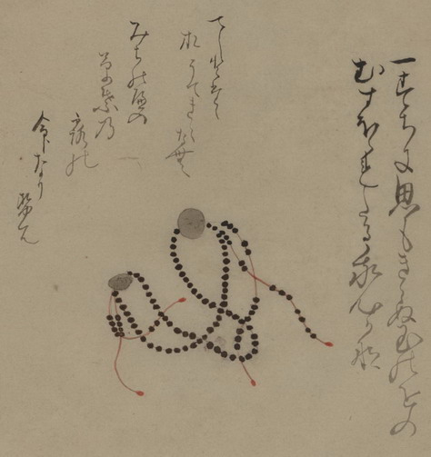

数珠；ジュズ

数珠の化物。大きな2つの珠それぞれに目鼻口がついている。房が脚のようになり、立ち上がっている。詞書に「一すちに思もきらぬ玉のをのむすほゝれたる我心かな」「てしとたたおちてきえなむみちのへの草葉の露の命なりせは」とある。
出典：親書誌：U426_nichibunken_0150：付喪神絵詞；ツクモガミエコトバ／日付：2010／資源識別子：U426_nichibunken_0150_0016_0000
Copyright (c)2010- International Research Center for Japanese Studies, Kyoto, Japan. All rights reserved.